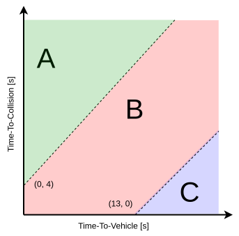

Crosswalk#
Role#
This module judges whether the ego should stop in front of the crosswalk in order to provide safe passage for crosswalk users, such as pedestrians and bicycles, based on the objects' behavior and surround traffic.

Flowchart#
![uml diagram]()
![uml diagram]()
Features#
Yield the Way to the Pedestrians#
Target Object#
The crosswalk module handles objects of the types defined by the following parameters in the object_filtering.target_object namespace.
| Parameter | Unit | Type | Description |
|---|---|---|---|
unknown |
[-] | bool | whether to look and stop by UNKNOWN objects |
pedestrian |
[-] | bool | whether to look and stop by PEDESTRIAN objects |
bicycle |
[-] | bool | whether to look and stop by BICYCLE objects |
motorcycle |
[-] | bool | whether to look and stop by MOTORCYCLE objects |
In order to handle the crosswalk users crossing the neighborhood but outside the crosswalk, the crosswalk module creates an attention area around the crosswalk, shown as the yellow polygon in the figure. If the object's predicted path collides with the attention area, the object will be targeted for yield.

The neighborhood is defined by the following parameter in the object_filtering.target_object namespace.
| Parameter | Unit | Type | Description |
|---|---|---|---|
crosswalk_attention_range |
[m] | double | the detection area is defined as -X meters before the crosswalk to +X meters behind the crosswalk |
Stop Position#
This function places a stop line to prevent re-transmission based on the following logic:
- stop line will be positioned at the closest point among the followings. Note that the envelope of the distances determined here is taken:
- The location of an existing stop line (if none exists, then at a distance of
stop_distance_from_crosswalk [m]from the crosswalk). stop_distance_from_object_preferred [m]before the predicted collision point with a person.
- The location of an existing stop line (if none exists, then at a distance of
- If reaching the stop line determined above requires an deceleration of
min_acc_preferred [m/ss]or more, the stop line will be set at the location where the vehicle can stop with a deceleration ofmin_acc_preferred [m/ss]. - If the stop line position determined above is further than a distance of
stop_distance_from_crosswalk_limit [m]from the pedestrian crossing, the stop line will be set atstop_distance_from_crosswalk_limit [m]from the pedestrian crossing. - If
enable_no_stop_decisionis enabled, and the deceleration required to stop at the position determined above is greater thanno_stop_decision.min_acc, the system will cancel the stop.


To decide the stop position, the following parameters are defined.
| Parameter | Type | Description | |
|---|---|---|---|
stop_position.stop_position_threshold |
[m] | double | If the ego vehicle has stopped near the stop line than this value, this module assumes itself to have achieved yielding. |
stop_position.stop_distance_from_crosswalk |
[m] | double | Stop line distance from a pedestrian crossing when no explicit stop line exists in the map. |
stop_position.stop_distance_from_object_preferred |
[m] | double | Preferred distance before a predicted collision for stop line placement. |
stop_position.stop_distance_from_crosswalk_limit |
[m] | double | Minimum stop line distance from a pedestrian crossing. |
stop_position.min_acc_preferred |
[m/ss] | double | Minimum deceleration to reach the initial stop line; if exceeded, the stop line is moved accordingly. |
no_stop_decision.enable_no_stop_decision |
bool | Enables/disables the cancellation of stopping. | |
no_stop_decision.min_acc |
[m/ss] | double | Minimum deceleration to cancel a stop (if enabled). |
Yield decision#
The module makes a decision to yield only when the pedestrian traffic light is GREEN or UNKNOWN. The decision is based on the following variables, along with the calculation of the collision point.
- Time-To-Collision (TTC): The time for the ego to reach the virtual collision point.
- Time-To-Vehicle (TTV): The time for the object to reach the virtual collision point.
We classify ego behavior at crosswalks into three categories according to the relative relationship between TTC and TTV [1].
- A. TTC >> TTV: The object will pass early enough than the ego reach the collision point.
- No stop planning.
- B. TTC TTV: There is a risk of collision.
- Stop point is inserted in the ego's path.
- C. TTC << TTV: The ego will pass early enough than the object reach the collision point.
- No stop planning.
The following figure shows the decision result for each TTC and TTV with the parameters, ego_pass_first_margin_x is {0}, ego_pass_first_margin_y is {4}, ego_pass_later_margin_x is {0}, and ego_pass_later_margin_y is {13}.
|  |
If the red signal is indicating to the corresponding crosswalk, the ego do not yield against the pedestrians.
 |
 |
In the pass_judge namespace, the following parameters are defined.
| Parameter | Type | Description | |
|---|---|---|---|
ego_pass_first_margin_x |
[[s]] | double | time to collision margin vector for ego pass first situation (the module judges that ego don't have to stop at TTC + MARGIN < TTV condition) |
ego_pass_first_margin_y |
[[s]] | double | time to vehicle margin vector for ego pass first situation (the module judges that ego don't have to stop at TTC + MARGIN < TTV condition) |
ego_pass_first_additional_margin |
[s] | double | additional time margin for ego pass first situation to suppress chattering |
ego_pass_later_margin_x |
[[s]] | double | time to vehicle margin vector for object pass first situation (the module judges that ego don't have to stop at TTV + MARGIN < TTC condition) |
ego_pass_later_margin_y |
[[s]] | double | time to collision margin vector for object pass first situation (the module judges that ego don't have to stop at TTV + MARGIN < TTC condition) |
ego_pass_later_additional_margin |
[s] | double | additional time margin for object pass first situation to suppress chattering |
Smooth Yield Decision#
If the object is stopped near the crosswalk but has no intention of walking, a situation can arise in which the ego continues to yield the right-of-way to the object. To prevent such a deadlock situation, the ego will cancel yielding depending on the situation.
For the object stopped around the crosswalk but has no intention to walk (*1), after the ego has keep stopping to yield for a specific time (*2), the ego cancels the yield and starts driving.
*1:
The time is calculated by the interpolation of distance between the object and crosswalk with distance_set_for_no_intention_to_walk and timeout_set_for_no_intention_to_walk.
In the pass_judge namespace, the following parameters are defined.
| Parameter | Type | Description | |
|---|---|---|---|
distance_set_for_no_intention_to_walk |
[[m]] | double | key sets to calculate the timeout for no intention to walk with interpolation |
timeout_set_for_no_intention_to_walk |
[[s]] | double | value sets to calculate the timeout for no intention to walk with interpolation |
*2:
In the pass_judge namespace, the following parameters are defined.
| Parameter | Type | Description | |
|---|---|---|---|
timeout_ego_stop_for_yield |
[s] | double | If the ego maintains the stop for this amount of time, then the ego proceeds, assuming it has stopped long time enough. |
New Object Handling#
Due to the perception's limited performance where the tree or poll is recognized as a pedestrian or the tracking failure in the crowd or occlusion, even if the surrounding environment does not change, the new pedestrian (= the new ID's pedestrian) may suddenly appear unexpectedly. If this happens while the ego is going to pass the crosswalk, the ego will stop suddenly.
To deal with this issue, the option disable_yield_for_new_stopped_object is prepared.
If true is set, the yield decisions around the crosswalk with a traffic light will ignore the new stopped object.
In the pass_judge namespace, the following parameters are defined.
| Parameter | Type | Description | |
|---|---|---|---|
disable_yield_for_new_stopped_object |
[-] | bool | If set to true, the new stopped object will be ignored around the crosswalk with a traffic light |
Obstruction Prevention on the Crosswalk#
The feature will make the ego not to stop on the crosswalk. When there is a low-speed or stopped vehicle ahead of the crosswalk, and there is not enough space between the crosswalk and the vehicle, the crosswalk module plans to stop before the crosswalk even if there are no pedestrians or bicycles.
min_acc, min_jerk, and max_jerk are met. If the ego cannot stop before the crosswalk with these parameters, the stop position will move forward.

In the obstruction_prevention namespace, the following parameters are defined.
| Parameter | Unit | Type | Description |
|---|---|---|---|
target_vehicle_velocity |
[m/s] | double | maximum velocity threshold whether the target vehicle is stopped or not |
max_target_vehicle_lateral_offset |
[m] | double | maximum lateral offset of the target vehicle position |
required_clearance |
[m] | double | clearance to be secured between the ego and the ahead vehicle |
min_acc |
[m/ss] | double | minimum acceleration to stop |
min_jerk |
[m/sss] | double | minimum jerk to stop |
max_jerk |
[m/sss] | double | maximum jerk to stop |
Map Slow Down Behavior#
In the current autoware implementation, if no target object is detected around a crosswalk, the ego vehicle will not slow down for the crosswalk. However, it may be desirable to slow down in situations, for example, where there are blind spots. Such a situation can be handled by setting some tags to the related crosswalk as instructed in the lanelet2_format_extension.md document.
| Parameter | Type | Description | |
|---|---|---|---|
slow_velocity |
[m/s] | double | target vehicle velocity when module receive slow down command from FOA |
max_slow_down_jerk |
[m/sss] | double | minimum jerk deceleration for safe brake |
max_slow_down_accel |
[m/ss] | double | minimum accel deceleration for safe brake |
no_relax_velocity |
[m/s] | double | if the current velocity is less than X m/s, ego always stops at the stop position(not relax deceleration constraints) |
Occlusion#
This feature makes ego slow down for a crosswalk that is occluded.
Occlusion of the crosswalk is determined using the occupancy grid.
An occlusion is a square of size min_size of occluded cells
(i.e., their values are between free_space_max and occupied_min)
of size min_size.
If an occlusion is found within range of the crosswalk,
then the velocity limit at the crosswalk is set to slow_down_velocity (or more to not break limits set by max_slow_down_jerk and max_slow_down_accel).
The range is calculated from the intersection between the ego path and the crosswalk and is equal to the time taken by ego to reach the crosswalk times the occluded_object_velocity.
This range is meant to be large when ego is far from the crosswalk and small when ego is close.
In order to avoid flickering decisions, a time buffer can be used such that the decision to add (or remove) the slow down is only taken
after an occlusion is detected (or not detected) for a consecutive time defined by the time_buffer parameter.
To ignore occlusions when the crosswalk has a traffic light, ignore_with_traffic_light should be set to true.
To ignore temporary occlusions caused by moving objects,
ignore_behind_predicted_objects should be set to true.
By default, occlusions behind an object with velocity higher than ignore_velocity_thresholds.default are ignored.
This velocity threshold can be specified depending on the object type by specifying the object class label and velocity threshold in the parameter lists ignore_velocity_thresholds.custom_labels and ignore_velocity_thresholds.custom_thresholds.
To inflate the masking behind objects, their footprint can be made bigger using extra_predicted_objects_size.

| Parameter | Unit | Type | Description |
|---|---|---|---|
enable |
[-] | bool | if true, ego will slow down around crosswalks that are occluded |
occluded_object_velocity |
[m/s] | double | assumed velocity of objects that may come out of the occluded space |
slow_down_velocity |
[m/s] | double | slow down velocity |
time_buffer |
[s] | double | consecutive time with/without an occlusion to add/remove the slowdown |
min_size |
[m] | double | minimum size of an occlusion (square side size) |
free_space_max |
[-] | double | maximum value of a free space cell in the occupancy grid |
occupied_min |
[-] | double | minimum value of an occupied cell in the occupancy grid |
ignore_with_traffic_light |
[-] | bool | if true, occlusions at crosswalks with traffic lights are ignored |
ignore_behind_predicted_objects |
[-] | bool | if true, occlusions behind predicted objects are ignored |
ignore_velocity_thresholds.default |
[m/s] | double | occlusions are only ignored behind objects with a higher or equal velocity |
ignore_velocity_thresholds.custom_labels |
[-] | string list | labels for which to define a non-default velocity threshold (see autoware_perception_msgs::msg::ObjectClassification for all the labels) |
ignore_velocity_thresholds.custom_thresholds |
[-] | double list | velocities of the custom labels |
extra_predicted_objects_size |
[m] | double | extra size added to the objects for masking the occlusions |
Stop for parked vehicles#
This feature makes ego stop before the crosswalk if there are other vehicles parked in front of the crosswalk, possibly obstructing the view of incoming pedestrians or bicycles.
The feature is enabled with the parked_vehicles_stop.enable parameter but is skipped when one of these conditions is true:
- the traffic light is red for the crosswalk users: pedestrians are not supposed to cross so ego does not need to stop;
- the traffic light is red for the ego vehicle: the traffic light module will add a stop if necessary;
- we are already planning to stop for crosswalk users or stuck vehicles.
Other vehicles are determined to be stopped if their velocity is less or equal to the parked_vehicles_stop.parked_velocity_threshold parameter.
A search area is built along the ego path ahead of the crosswalk by a distance set with the parked_vehicles_stop.search_distance parameter.
A stop is planned such that ego will be aligned with the furthest parked vehicle along the ego path within the search area.
Once ego stops inside the search area for at least the duration set by parked_vehicles_stop.min_ego_stop_duration, the stop is removed and no more stop for parked vehicles will be triggered for that crosswalk.
To prevent chattering caused by noise in the detected objects, once an object is selected for stopping, its last state will keep being considered for at least a duration of parked_vehicles_stop.vehicle_permanence_duration, even if the object is no longer detected or if it is no longer parked.
| Parameter | Unit | Type | Description |
|---|---|---|---|
parked_vehicles_stop.enable |
[-] | bool | if true, ego will stop if there are parked vehicles before the crosswalk |
parked_vehicles_stop.search_distance |
[m] | double | distance ahead of the crosswalk where to search for parked vehicles |
parked_vehicles_stop.min_ego_stop_duration |
[s] | double | minimum duration ego should stop before it can continue |
parked_vehicles_stop.vehicle_permanence_duration |
[s] | double | [s] if an object disappears or is no longer classified as parked vehicle, its last state is still used for this duration |
parked_vehicles_stop.ego_inside_safe_area_margin |
[m] | double | margin used to consider if ego is inside the search area. Should be higher than the expected longitudinal error when stopping |
parked_vehicles_stop.parked_velocity_threshold |
[m/s] | double | vehicle are considered to be parked if their velocity is less or equal this threshold |
Others#
In the common namespace, the following parameters are defined.
| Parameter | Unit | Type | Description |
|---|---|---|---|
show_processing_time |
[-] | bool | whether to show processing time |
traffic_light_state_timeout |
[s] | double | timeout threshold for traffic light signal |
enable_rtc |
[-] | bool | if true, the scene modules should be approved by (request to cooperate)rtc function. if false, the module can be run without approval from rtc. |
lost_detection_timeout |
[s] | double | Time to keep an object after its detection is lost |
Map-based forced RTC#
RTC can be enabled for specific crosswalks in the lanelet map such that even if enable_rtc is set to false, approval will be required for crossing the corresponding crosswalks.
The following attribute should be added to the crosswalk lanelet in the map file:
<tag k='rtc_approval_required_v1' v='crosswalk' />
Known Issues#
- The yield decision may be sometimes aggressive or conservative depending on the case.
- The main reason is that the crosswalk module does not know the ego's position in the future. The detailed ego's position will be determined after the whole planning.
- Currently the module assumes that the ego will move with a constant velocity.
Debugging#
Visualization of debug markers#
/planning/scenario_planning/lane_driving/behavior_planning/behavior_velocity_planner/debug/crosswalk shows the following markers.

- Yellow polygons
- Ego footprints' polygon to calculate the collision check.
- Pink polygons
- Object footprints' polygon to calculate the collision check.
- The color of crosswalks
- Considering the traffic light's color, red means the target crosswalk, and white means the ignored crosswalk.
- Texts
- It shows the module ID, TTC, TTV, and the module state.
Visualization of Time-To-Collision#
ros2 run autoware_behavior_velocity_crosswalk_module time_to_collision_plotter.py
enables you to visualize the following figure of the ego and pedestrian's time to collision.
The label of each plot is <crosswalk module id>-<pedestrian uuid>.

Trouble Shooting#
Behavior#
- Q. The ego stopped around the crosswalk even though there were no crosswalk user objects.
- Q. The crosswalk virtual wall suddenly appeared resulting in the sudden stop.
- A. There may be a crosswalk user started moving when the ego was close to the crosswalk.
- Q. The crosswalk module decides to stop even when the pedestrian traffic light is red.
- A. The lanelet map may be incorrect. The pedestrian traffic light and the crosswalk have to be related.
- Q. In the planning simulation, the crosswalk module does the yield decision to stop on all the crosswalks.
- A. This is because the pedestrian traffic light is unknown by default. In this case, the crosswalk does the yield decision for safety.
Parameter Tuning#
- Q. The ego's yield behavior is too conservative.
- A. Tune
ego_pass_later_margindescribed in Yield Decision
- A. Tune
- Q. The ego's yield behavior is too aggressive.
- A. Tune
ego_pass_later_margindescribed in Yield Decision
- A. Tune
References/External links#
[1] , , , , , , 2013, 44 , 3 , p. 931-936.